1 DeepSeek-AI
2 北京大学多媒体信息处理全国重点实验室
3 清华大学交叉信息研究院
4 南京大学计算机软件新技术国家重点实验室
在 LLM 时代，MoE（Mixture-of-Experts）是一种很有前景的架构，可以在扩大模型参数规模时控制计算成本。然而，像 GShard 这样从 \(N\) 个专家中激活前 \(K\) 个专家的传统 MoE 架构，在确保专家专门化方面面临挑战；这里的专家专门化是指每个专家获取互不重叠且集中的知识。为此，我们提出 DeepSeekMoE 架构，以迈向极致的专家专门化。它包含两项主要策略：（1）将专家细分为 mN 个，并从中激活 mK 个，使被激活专家的组合更加灵活；（2）分离出 \(K_{s}\) 个专家作为共享专家，旨在捕获共通知识并减轻路由专家中的冗余。从 2B 参数的较小规模开始，我们证明 DeepSeekMoE 2B 的性能与 GShard 2.9B 相当，而后者的专家参数量和计算量均为其 1.5 倍。此外，DeepSeekMoE 2B 的性能几乎接近总参数量相同的稠密对应模型，而该稠密模型界定了 MoE 模型的性能上界。随后，我们将 DeepSeekMoE 扩展到 16B 参数，并表明它仅用约 40% 的计算量，就能达到与 LLaMA2 7B 相当的性能。进一步地，我们将 DeepSeekMoE 扩展至 145B 参数的初步尝试持续验证了它相对于 GShard 架构的显著优势，并表明它仅用 28.5%（甚至可能是 18.2%）的计算量，就能达到与 DeepSeek 67B 相当的性能。
近期研究和实践通过实证表明，在训练数据充足的情况下，增加参数量和计算预算来扩展语言模型，可以得到显著更强的模型（Brown et al., 2020; Hoffmann et al., 2022; OpenAI, 2023; Touvron et al., 2023a）。然而，必须承认，将模型扩展到极大规模也伴随着极高的计算成本。考虑到这些高昂成本，MoE 架构（Jacobs et al., 1991; Jordan and Jacobs, 1994; Shazeer et al., 2017）已成为一种流行的解决方案。它能够（接下页）
∗ 在 DeepSeek-AI 实习期间作出的贡献。
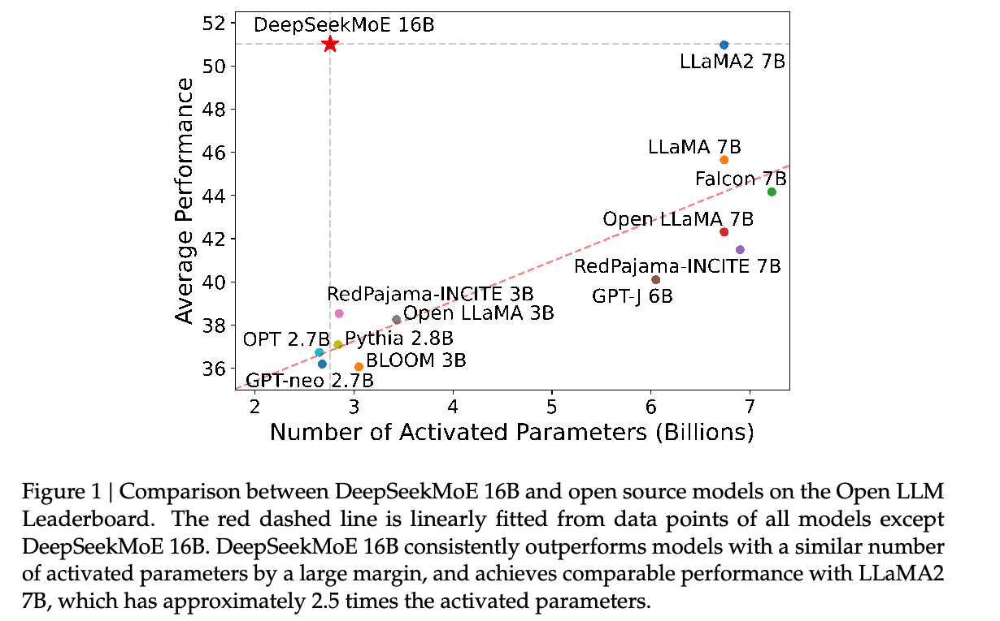
（接第 1 页）
实现参数规模的扩展，同时将计算成本保持在适度水平。近期将 MoE 架构应用于 Transformer（Vaswani et al., 2017）的工作，已成功将语言模型扩展到相当大的规模（Du et al., 2022; Fedus et al., 2021; Lepikhin et al., 2021; Zoph, 2022），并取得显著性能。这些成果凸显了 MoE 语言模型的巨大潜力和前景。
尽管 MoE 架构前景可观，现有架构仍可能存在知识混杂和知识冗余问题，限制专家专门化，也就是限制每个专家获得互不重叠且集中的知识。传统 MoE 架构用 MoE 层替换 Transformer 中的 FFN（Feed-Forward Networks）。每个 MoE 层包含多个专家，每个专家的结构与标准 FFN 相同，每个 token 被分配给一个（Fedus et al., 2021）或两个（Lepikhin et al., 2021）专家。这种架构存在两个潜在问题：（1）知识混杂：现有 MoE 实践通常使用有限数量的专家（例如 8 个或 16 个），因此分配给某个特定专家的 token 很可能涵盖多种知识。结果是，该专家会试图将截然不同的知识类型汇集到自身参数中，而这些知识很难被同时利用。（2）知识冗余：分配给不同专家的 token 可能需要共通知识。因此，多个专家可能在各自参数中学到相同的共享知识，造成专家参数冗余。这些问题共同阻碍了现有 MoE 实践中的专家专门化，使其无法达到 MoE 模型的理论性能上界。
针对上述问题，我们提出 DeepSeekMoE，这是一种专门面向极致专家专门化设计的创新 MoE 架构。我们的架构包含两项主要策略：（1）细粒度专家分割：在保持参数量不变的同时，通过拆分（接下页）
（接第 2 页）
FFN 的中间隐藏维度，将专家划分为更细的粒度。相应地，在保持计算成本不变的情况下，我们还激活更多细粒度专家，使被激活专家的组合更加灵活、适应性更强。细粒度专家分割使多样的知识能够被更细致地分解，并更精确地由不同专家学习，从而让每个专家保持更高程度的专门化。此外，激活专家组合的灵活性提高，也有助于更准确、更有针对性地获取知识。（2）共享专家分离：我们分离出某些专家，使其作为始终激活的共享专家，旨在捕获并整合不同上下文中的共通知识。通过将共通知识压缩到这些共享专家中，可以减轻其他路由专家之间的冗余。这可以提高参数效率，并使每个路由专家专注于不同的方面，保持专门化。DeepSeekMoE 中的这些架构创新，为训练参数高效且每个专家高度专门化的 MoE 语言模型创造了机会。
从 2B 参数的较小规模开始，我们验证了 DeepSeekMoE 架构的优势。我们在涵盖不同任务的 12 个零样本或少样本基准上进行评估。实证结果表明，DeepSeekMoE 2B 大幅超过 GShard 2B（Lepikhin et al., 2021），甚至达到 GShard 2.9B 的水平，而这个更大的 MoE 模型拥有 1.5 倍的专家参数量和计算量。值得关注的是，我们发现 DeepSeekMoE 2B 几乎接近参数量相同的稠密对应模型的性能，而该稠密模型界定了 MoE 语言模型的严格上界。为获得更深入的认识，我们对 DeepSeekMoE 开展了详尽的消融研究和专家专门化分析。这些研究验证了细粒度专家分割和共享专家分离的有效性，并为 DeepSeekMoE 能够达到高度专家专门化的论断提供了实证证据。
利用我们的架构，我们随后将模型参数量扩展到 16B，并在包含 2T token 的大规模语料上训练 DeepSeekMoE 16B。评估结果表明，DeepSeekMoE 16B 仅用约 40% 的计算量，就能达到与 DeepSeek 7B（DeepSeek-AI, 2024）相当的性能；后者是在相同 2T 语料上训练的稠密模型。我们也将 DeepSeekMoE 与开源模型比较，评估表明 DeepSeekMoE 16B 始终大幅优于激活参数量相近的模型，并达到与 LLaMA2 7B（Touvron et al., 2023b）相当的性能，而后者的激活参数量约为其 2.5 倍。图 1 展示了 Open LLM Leaderboard1 上的评估结果。此外，我们通过 SFT 进行对齐，将模型转化为聊天模型。评估结果表明，在聊天设置下，DeepSeekMoE Chat 16B 也达到了与 DeepSeek Chat 7B 和 LLaMA2 SFT 7B 相当的性能。受到这些结果的鼓舞，我们进一步初步尝试将 DeepSeekMoE 扩展至 145B。实验结果仍持续验证其相对于 GShard 架构的显著优势。此外，它仅用 28.5%（甚至可能是 18.2%）的计算量，就能达到与 DeepSeek 67B 相当的性能。
我们的贡献概括如下：
1 https://huggingface.co/spaces/HuggingFaceH4/open_llm_leaderboard
（接第 3 页的“实证验证”）
专家专门化，并表明 DeepSeekMoE 2B 能够几乎接近 MoE 模型的性能上界。
我们首先介绍 Transformer 语言模型中常用的一种通用 MoE 架构。标准 Transformer 语言模型由 \(L\) 层标准 Transformer 块堆叠而成，其中每个块可表示为：
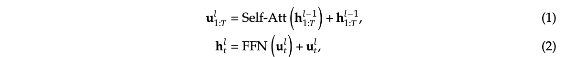
其中，\(T\) 表示序列长度，Self-Att(·) 表示自 attention 模块，FFN(·) 表示 FFN，\(u^{l}_{1:T} \in \mathbb{R} ^{T\times d}\) 是第 \(l\) 个 attention 模块之后所有 token 的隐藏状态，\(h^{l}_{t} \in \mathbb{R} ^{d}\) 是第 \(l\) 个 Transformer 块之后第 \(t\) 个 token 的输出隐藏状态。为简洁起见，上述公式省略了层归一化。
构建 MoE 语言模型的一种典型做法，是每隔一定层数将 Transformer 中的 FFN 替换为 MoE 层（Du et al., 2022; Fedus et al., 2021; Lepikhin et al., 2021; Zoph, 2022）。MoE 层由多个专家组成，每个专家在结构上都与标准 FFN 相同。随后，每个 token 会被分配给一个（Fedus et al., 2021）或两个（Lepikhin et al., 2021）专家。如果第 \(l\) 个 FFN 被替换为 MoE 层，其输出隐藏状态 \(h^{l}_{t}\) 的计算可表示为：
其中，\(N\) 表示专家总数，\(FFN_{i}(\cdot )\) 是第 \(i\) 个专家 FFN，\(g_{i,t}\) 表示第 \(i\) 个专家的门控值，\(s_{i,t}\) 表示 token 与专家之间的亲和度，Topk(·, \(K\)) 表示第 \(t\) 个 token 与全部 \(N\) 个专家的亲和度分数中最高的 \(K\) 个分数组成的集合，\(e^{l}_{i}\) 是第 \(l\) 层中第 \(i\) 个专家的中心向量。注意，\(g_{i,t}\) 是稀疏的，即 \(N\) 个门控值中只有 \(K\) 个非零。这种稀疏性确保了 MoE 层内的计算效率，也就是说，每个 token 仅被分配到 \(K\) 个专家中并在其中计算。同样，为简洁起见，上述公式省略了层归一化操作。
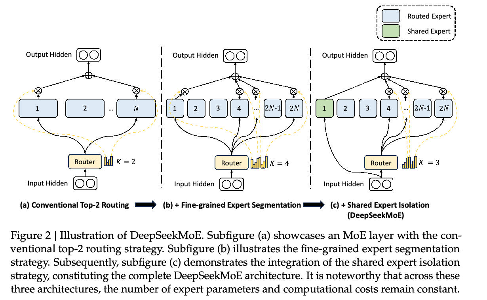
在第 2 节所述通用 MoE 架构的基础上，我们引入 DeepSeekMoE，它专门用于挖掘专家专门化的潜力。如图 2 所示，我们的架构包含细粒度专家分割和共享专家分离两项主要策略。这两项策略都旨在提高专家专门化的程度。
在专家数量有限的情况下，分配给某个特定专家的 token 更可能涵盖多种知识。结果是，该专家会试图在自身参数中学习截然不同的知识类型，而这些知识很难被同时利用。然而，如果每个 token 能够被路由到更多专家，多样的知识就有可能被分解，并分别由不同专家学习。在这种情况下，每个专家仍能保持高度专门化，从而使知识在专家之间的分布更加集中。
为实现这一目标，我们在保持专家参数量和计算成本不变的同时，将专家划分为更细的粒度。更细的专家分割使被激活专家的组合更加灵活、适应性更强。具体来说，在图 2(\(a\)) 所示的典型 MoE 架构基础上，我们将 FFN 的中间隐藏维度减小到原来的 1/m，从而将每个专家 FFN 分割成 \(m\) 个较小专家。由于每个专家变小了，我们相应地将激活专家数量也增加到 \(m\) 倍，以保持相同的计算成本，如图 2(\(b\)) 所示。采用细粒度（接下页）
（接第 5 页）
专家分割后，MoE 层的输出可表示为：
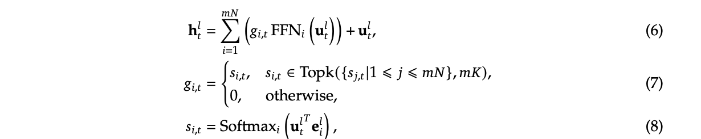
其中，专家总参数量等于标准 FFN 参数量的 \(N\) 倍，mN 表示细粒度专家的总数。采用细粒度专家分割策略后，非零门控值的数量也增加到 mK。
从组合数学的角度看，细粒度专家分割策略显著增强了激活专家组合的灵活性。举例来说，考虑 N = 16 的情况。典型的 top-2 路由策略可以产生 C(16, 2) = 120 种可能组合。相比之下，如果将每个专家拆分为 4 个较小专家，细粒度路由策略可以产生 C(64, 8) = 4,426,165,368 种潜在组合。组合灵活性的大幅提升，增强了更准确、更有针对性地获取知识的潜力。
在传统路由策略下，分配给不同专家的 token 可能需要某些共通知识或信息。因此，多个专家可能在各自参数中获取相同的共享知识，造成专家参数冗余。然而，如果存在专门用于捕获并整合不同上下文中共通知识的共享专家，其他路由专家之间的参数冗余就会减轻。冗余的减少有助于得到参数效率更高、专家更专门化的模型。
为实现这一目标，除细粒度专家分割策略外，我们进一步分离出 \(K_{s}\) 个专家作为共享专家。无论路由器模块如何选择，每个 token 都会被确定性地分配给这些共享专家。为保持计算成本不变，其他路由专家中的激活数量将减少 \(K_{s}\)，如图 2(c) 所示。加入共享专家分 off-policy 后，完整 DeepSeekMoE 架构中的 MoE 层可写为：
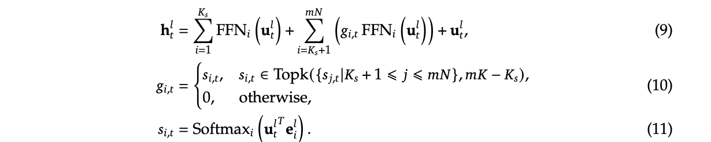
最终，在 DeepSeekMoE 中，共享专家数量为 \(K_{s}\)，路由专家总数为 mN \(- K_{s}\)，非零门控值数量为 mK \(- K_{s}\)。
共享专家分离的雏形可以归功于 Rajbhandari et al. (2022)。关键区别在于，他们从工程角度提出这一策略，而我们从算法角度出发。
自动学习的路由策略可能遇到负载不均衡问题，主要表现为两个缺陷。首先，存在路由坍塌风险（Shazeer et al., 2017），即模型始终只选择少数几个专家，使其他专家无法得到充分训练。其次，如果专家分布在多个设备上，负载不均衡可能加剧计算瓶颈。
专家级均衡损失。为减轻路由坍塌风险，我们也采用专家级均衡损失。该均衡损失的计算如下：
其中，\(\alpha _{1}\) 是称为专家级均衡系数的超参数；为简洁起见，\(N\)′ 等于 mN \(- K_{s}\)，\(K\)′ 等于 mK \(- K_{s}\)。\(\mathbb{1}(\cdot )\) 表示指示函数。
设备级均衡损失。除专家级均衡损失外，我们还引入设备级均衡损失。以缓解计算瓶颈为目标时，没有必要在专家级别施加严格的均衡约束，因为过强的负载均衡约束会损害模型性能。相反，我们的主要目标是确保设备之间的计算均衡。如果将全部路由专家划分为 \(D\) 组 \(\{\mathcal{E}_1,\mathcal{E}_2,\ldots,\mathcal{E}_D\}\)，并将每一组部署在单个设备上，设备级均衡损失计算如下：
其中，\(\alpha _{2}\) 是称为设备级均衡系数的超参数。实践中，我们设置较小的专家级均衡系数来减轻路由坍塌风险，同时设置较大的设备级均衡系数，以促进设备之间的计算均衡。
我们的训练数据采样自 DeepSeek-AI 构建的大规模多语言语料。该语料主要侧重英语和中文，也涵盖其他语言。其来源（接下页）
（接第 7 页）
包括网页文本、数学材料、代码脚本、已出版文献以及各种其他文本材料。为开展验证实验，我们从语料中采样一个包含 100B token 的子集来训练模型。分词方面，我们使用 HuggingFace Tokenizer2 工具，在训练语料的一个较小子集上训练 BPE（Sennrich et al., 2016）tokenizer。验证实验中，我们准备了词表大小为 8K 的 tokenizer；训练更大模型时将扩大词表规模。
我们基于 HAI-LLM（High-Flyer, 2023）开展实验。它是一个高效、轻量的训练框架，整合了多种并行策略，包括 TP（Korthikanti et al., 2023; Narayanan et al., 2021; Shoeybi et al., 2019）、ZeRO DP（Rajbhandari et al., 2020）、PipeDream PP（Harlap et al., 2018），以及更具体地，通过结合 DP 与 TP 实现的 EP（Lepikhin et al., 2021）。为优化性能，我们使用 CUDA 和 Triton（Tillet et al., 2019）开发 GPU kernel，用于门控算法以及跨不同专家线性层的计算融合。
所有实验均在配备 NVIDIA A100 或 H800 GPU 的集群上进行。A100 集群的每个节点包含 8 张 GPU，通过 NVLink 桥两两连接。H800 集群同样每个节点有 8 张 GPU，节点内部使用 NVLink 和 NVSwitch 互连。A100 和 H800 集群都使用 InfiniBand 互连促进节点间通信。
模型设置。验证实验中，我们将 Transformer 层数设为 9，隐藏维度设为 1280。我们采用 MHA，共有 10 个 attention 头，每个头的维度为 128。初始化时，所有可学习参数都以 0.006 的标准差随机初始化。我们将所有 FFN 替换为 MoE 层，并确保专家总参数量等于标准 FFN 的 16 倍。此外，激活专家参数量，包括共享专家参数和被激活的路由专家参数，保持为标准 FFN 的 2 倍。在这一配置下，每个 MoE 模型的总参数量约为 2B，激活参数量约为 0.3B。
训练设置。我们采用 AdamW 优化器（Loshchilov and Hutter, 2019），超参数设为 \(\beta _{1} = 0.9\)、\(\beta _{2} = 0.95\) 和 weight_decay = 0.1。学习率采用 warmup 后阶梯衰减策略。开始时，学习率在前 2K 步从 0 线性增加到最大值。随后，在训练步数的 80% 处将学习率乘以 0.316，并在 90% 处再次乘以 0.316。验证实验的最大学习率设为 \(1.08 \times 10^{-3}\)，gradient 裁剪范数设为 1.0。Batch size 设为 2K，最大序列长度为 2K，因此每个训练 batch 包含 4M token。相应地，总训练步数设为 25,000，以达到 100B 训练 token。由于训练数据充足，我们在训练中不使用 dropout。鉴于模型规模相对较小，所有参数，包括专家参数，都部署在单张 GPU 上，以避免计算不均衡。相应地，我们训练时不丢弃任何 token，也不采用设备级（接下页）
（接第 8 页）
均衡损失。为防止路由坍塌，我们将专家级均衡系数设为 0.01。
为方便阅读，我们还在附录 A 中给出了不同规模 DeepSeekMoE 的超参数总览表。
我们在覆盖多种任务类型的广泛基准上进行评估。基准如下。
语言建模。对于语言建模，我们在 Pile（Gao et al., 2020）测试集上评估模型，评估指标为交叉熵损失。
语言理解与推理。对于语言理解与推理，我们采用 HellaSwag（Zellers et al., 2019）、PIQA（Bisk et al., 2020）、ARC-challenge 和 ARC-easy（Clark et al., 2018）。这些任务的评估指标为准确率。
阅读理解。对于阅读理解，我们使用 RACE-high 和 RACE-middle（Lai et al., 2017），评估指标为准确率。
代码生成。对于代码生成，我们在 HumanEval（Chen et al., 2021）和 MBPP（Austin et al., 2021）上评估模型。评估指标为 Pass@1，表示仅进行一次生成尝试时的通过率。
闭卷问答。对于闭卷问答，我们采用 TriviaQA（Joshi et al., 2017）和 NaturalQuestions（Kwiatkowski et al., 2019）。评估指标为完全匹配（EM）率。
基线。验证实验中，我们比较包括 DeepSeekMoE 在内的五个模型。Dense 表示总参数量为 0.2B 的标准稠密 Transformer 语言模型。Hash Layer（Roller et al., 2021）是一种基于 top-1 哈希路由的 MoE 架构，总参数量为 2.0B，激活参数量为 0.2B，与稠密基线对齐。Switch Transformer（Fedus et al., 2021）是另一种知名 MoE 架构，基于可学习的 top-1 路由，总参数量和激活参数量与 Hash Layer 相同。GShard（Lepikhin et al., 2021）采用可学习的 top-2 路由策略，总参数量为 2.0B，激活参数量为 0.3B，因为相比 top-1 路由方法，它多激活了一个专家。DeepSeekMoE 包含 1 个共享专家和 63 个路由专家，每个专家的大小为标准 FFN 的 0.25 倍。包括 DeepSeekMoE 在内，所有比较模型都使用相同的训练语料和训练超参数。所有比较的 MoE 模型具有相同的总参数量，且 GShard 的激活参数量与 DeepSeekMoE 相同。
结果。我们在表 1 中给出评估结果。对于所有展示的模型，我们报告其在 100B token 上训练后的最终评估结果。从表中可以得到以下观察：（1）采用稀疏架构并拥有更多总参数的 Hash Layer（接下页）
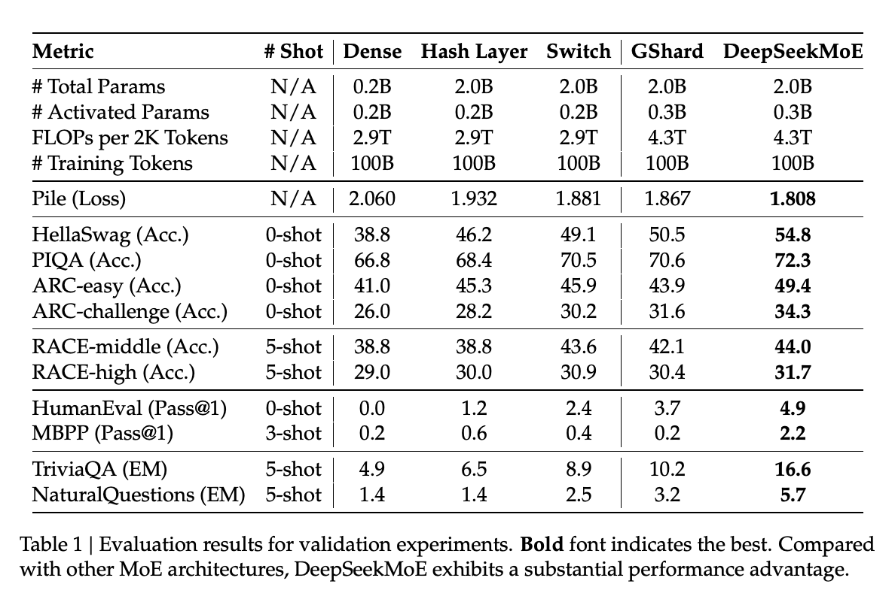
（接第 9 页）
和 Switch Transformer 的性能显著强于激活参数量相同的稠密基线。（2）相比 Hash Layer 和 Switch Transformer，GShard 的激活参数更多，性能略好于 Switch Transformer。（3）在总参数量和激活参数量均相同的情况下，DeepSeekMoE 相比 GShard 展现出压倒性优势。这些结果展示了 DeepSeekMoE 架构相对于现有 MoE 架构的优越性。
我们已经证明，DeepSeekMoE 优于稠密基线和其他 MoE 架构。为更准确地理解 DeepSeekMoE 的性能，我们将其与总参数量或激活参数量更多的大规模基线进行比较。这些比较使我们能够估计：GShard 或稠密基线需要达到多大的模型规模，才能获得与 DeepSeekMoE 相当的性能。
与 GShard×1.5 比较。表 2 展示了 DeepSeekMoE 与更大 GShard 模型的比较；后者的专家大小为原来的 1.5 倍，因而专家参数量和专家计算量也均为原来的 1.5 倍。总体而言，我们观察到 DeepSeekMoE 的性能与 GShard×1.5 相当，凸显了 DeepSeekMoE 架构的显著优势。除与 GShard×1.5 的比较外，我们还在附录 B 中展示了与 GShard×1.2 的比较。
此外，我们将 DeepSeekMoE 的总参数量增至 13.3B，并与总参数量分别为 15.9B 和 19.8B 的 GShard×1.2 和 GShard×1.5 比较。我们发现，在更大规模下，DeepSeekMoE 甚至能够明显优于 GShard×1.5。这些（接下页）
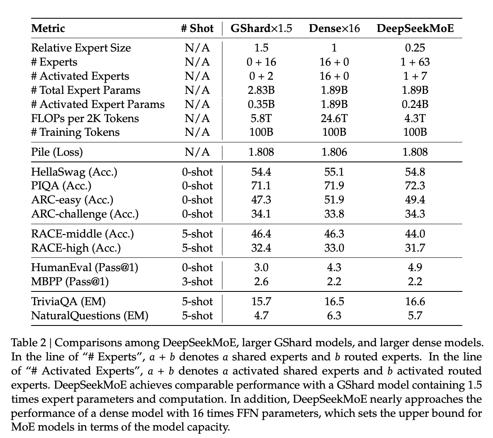
（接第 10 页）
结果也见附录 B。
与 Dense×16 比较。表 2 也展示了 DeepSeekMoE 与更大稠密模型的比较。为公平比较，我们没有使用常见的 attention 参数与 FFN 参数比例（1:2）。相反，我们配置了 16 个共享专家，每个专家的参数量都与标准 FFN 相同。这种架构模拟了具有 16 倍标准 FFN 参数的稠密模型。从表中可以发现，DeepSeekMoE 的性能几乎接近 Dense×16，而后者从模型容量角度界定了 MoE 模型的严格性能上界。这些结果表明，至少在约 2B 参数、100B 训练 token 的规模下，DeepSeekMoE 的性能已接近 MoE 模型的理论上界。此外，我们还在附录 B 中提供了与 Dense×4 的额外比较。
为证实细粒度专家分割与共享专家分 off-policy 的有效性，我们对 DeepSeekMoE 进行消融研究，并在图 3 中展示结果。为公平比较，我们确保所有参与比较的模型具有（接下页）
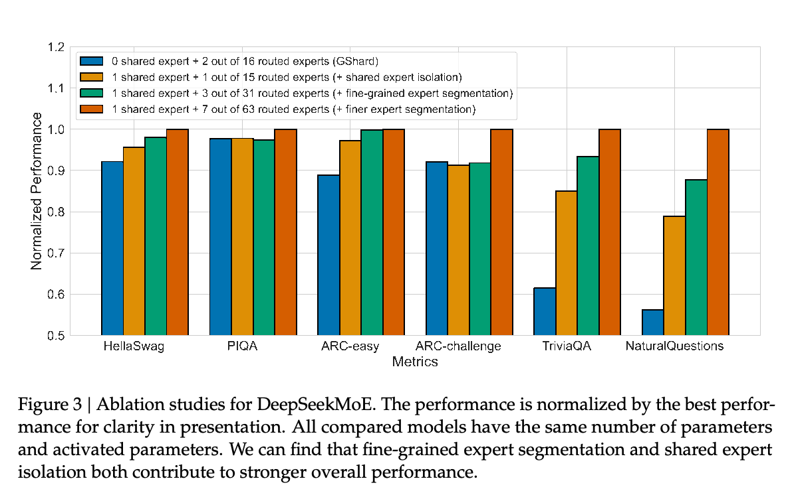
（接第 11 页）
相同的总参数量和激活参数量。
共享专家分离。为评估共享专家分 off-policy 的影响，我们在 GShard 基础上将一个专家分离为共享专家。从图 3 中可以观察到，相比 GShard，有意分离出一个共享专家能在大多数基准上提升性能。这些结果支持了共享专家分 off-policy 有助于提升模型性能的观点。
细粒度专家分割。为评估细粒度专家分割策略的有效性，我们进一步将专家切分为更细的粒度，进行更详细的比较。具体而言，我们将每个专家分割为 2 个或 4 个更小的专家，得到总共 32 个（1 个共享专家 + 31 个路由专家）或 64 个（1 个共享专家 + 63 个路由专家）专家。图 3 揭示了一个一致的趋势：专家分割粒度不断细化时，模型整体性能也持续增强。这些发现为细粒度专家分割策略的有效性提供了实证支持。
共享专家与路由专家的比例。此外，我们研究了共享专家与路由专家的最佳比例。在总专家数为 64 的最细粒度设置下，保持总专家数和激活专家数不变，我们尝试将 1、2 和 4 个专家分离为共享专家。我们发现，共享专家与路由专家的不同配比不会显著影响性能：1、2 和 4 个共享专家对应的 Pile 损失分别为 1.808、1.806 和 1.811。考虑到 1:3 的比例得到略好的 Pile 损失，在扩展 DeepSeekMoE 规模时，我们将共享专家与激活路由专家的比例保持为 1:3。
本节对 DeepSeekMoE 2B 的专家专门化进行实证分析。本节的 DeepSeekMoE 2B 指表 1 中报告的模型，即总参数量为 2.0B，激活 1 个共享专家及 63 个路由专家中的 7 个。
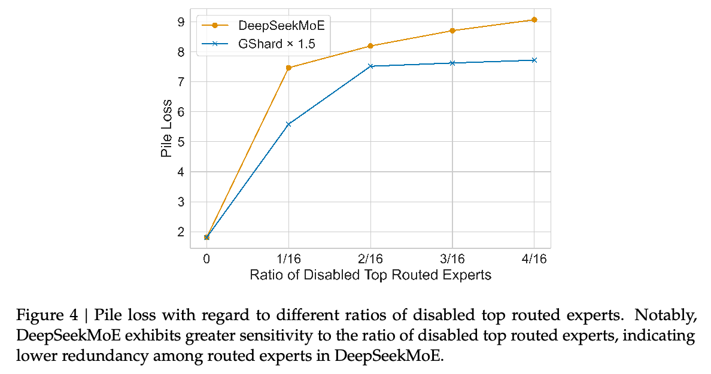
DeepSeekMoE 的路由专家冗余更低。为评估路由专家之间的冗余，我们以不同比例禁用排名靠前的路由专家，并评估 Pile 损失。具体而言，对每个 token，我们屏蔽一定比例的路由概率最高的专家，然后从剩余路由专家中选择前 K 个专家。为公平起见，我们将 DeepSeekMoE 与 GShard×1.5 比较，因为在不禁用任何专家时，两者的 Pile 损失相同。如图 4 所示，相比 GShard×1.5，DeepSeekMoE 对禁用排名靠前的路由专家更敏感。这种敏感性意味着 DeepSeekMoE 的参数冗余更低，因为每个路由专家都更难被替代。相比之下，GShard×1.5 的专家参数冗余更高，因此可以缓冲禁用排名靠前的路由专家时造成的性能下降。
路由专家无法替代共享专家。为研究 DeepSeekMoE 中共享专家的作用，我们禁用共享专家，并多激活一个路由专家。Pile 上的评估显示，即使保持相同计算成本，Pile 损失仍显著上升，从 1.808 增至 2.414。该结果突出了共享专家的关键作用，并表明共享专家捕获了路由专家未共享的基础性、必要知识，因此无法被路由专家替代。
DeepSeekMoE 更准确地获取知识。我们认为，激活专家组合的更高灵活性有助于更准确、更有针对性地获取知识。为验证这一观点，我们研究 DeepSeekMoE 是否能用更少的激活专家获取所需知识。具体而言，我们将激活路由专家数从 3 调整到 7，并评估对应的 Pile 损失。如图 5 所示，即使仅（接下页）
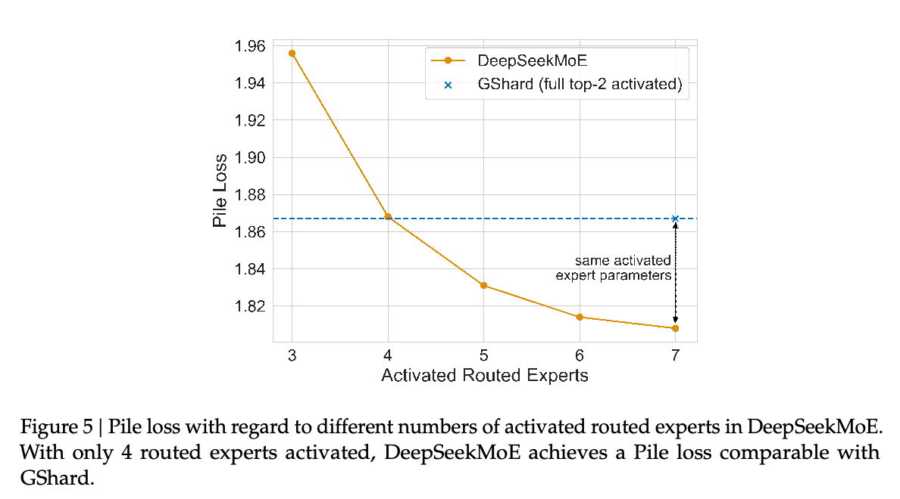
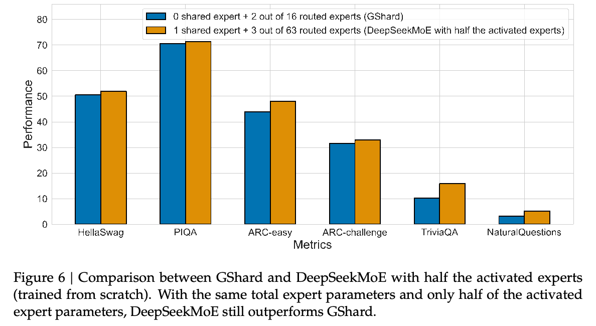
（接第 13 页）
激活 4 个路由专家，DeepSeekMoE 的 Pile 损失也能与 GShard 相当。这一观察支持了 DeepSeekMoE 能够更准确、更高效地获取所需知识的观点。
受到这些发现的鼓舞，为更严格地验证 DeepSeekMoE 的专家专门化和准确知识获取能力，我们从头训练了一个新模型。该模型包含 1 个共享专家和 63 个路由专家，但只激活 3 个路由专家。图 6 的评估结果表明，即使总专家参数量相同、激活专家参数量只有一半，DeepSeekMoE 仍然优于 GShard。这凸显了 DeepSeekMoE 更高效地利用专家参数的能力，（接下页）
（接第 14 页）
即激活专家中的有效参数比例远高于 GShard。
使用 DeepSeekMoE 架构，我们将 MoE 模型扩展至总参数量为 16B 的更大规模，并在 2T token 上训练。结果表明，相比 LLaMA2 7B，DeepSeekMoE 16B 仅用约 40% 的计算量，就能获得更优的性能。
我们从第 4.1.1 节描述的同一语料库采样训练数据。与验证实验不同，我们采样了更大量的 2T token 数据，与 LLaMA2 7B 的训练 token 数对齐。我们同样使用 HuggingFace Tokenizer 工具训练 BPE tokenizer，但将 DeepSeekMoE 16B 的词表大小设为 100K。
模型设置。对于 DeepSeekMoE 16B，我们将 Transformer 层数设为 28，隐藏维度设为 2048。我们采用 MHA，共有 16 个 attention 头，每个头的维度为 128。在初始化方面，所有可学习参数均以 0.006 的标准差随机初始化。我们将除第一层以外的所有 FFN 替换为 MoE 层，因为我们观察到第一层的负载均衡状态收敛尤其缓慢。每个 MoE 层包含 2 个共享专家和 64 个路由专家，每个专家的大小为标准 FFN 的 0.25 倍。每个 token 都会被路由到这 2 个共享专家及 64 个路由专家中的 6 个。由于专家规模过小可能降低计算效率，我们没有采用更细的专家分割粒度。在超过 16B 的更大规模下，仍然可以使用更细的粒度。在此配置下，DeepSeekMoE 16B 的总参数量约为 16.4B，激活参数量约为 2.8B。
训练设置。我们采用 AdamW 优化器（Loshchilov and Hutter, 2019），超参数为 \(\beta _{1} = 0.9\)、\(\beta _{2} = 0.95\)、weight_decay = 0.1。学习率同样使用 warmup 与阶梯衰减策略调度。首先，在前 2K 步中，学习率从 0 线性增至最大值。随后，在达到总训练步数的 80% 时将学习率乘以 0.316，在 90% 时再次乘以 0.316。DeepSeekMoE 16B 的最大学习率设为 \(4.2 \times 10^{-4}\)，gradient 裁剪范数设为 1.0。Batch 大小设为 4.5K，最大序列长度为 4K，因此每个训练 batch 包含 18M token。相应地，总训练步数设为 106,449，以达到 2T 训练 token。由于训练数据充足，我们训练时不使用 dropout。我们通过 PP，将模型的不同层部署在不同设备上；对于每一层，所有专家都部署在同一设备上。因此，我们在训练中也不丢弃任何 token，且不使用设备级均衡损失。为防止路由坍塌，我们将专家级均衡系数设为很小的 0.001，因为我们发现，在所采用的并行化策略下，更高的专家级均衡系数无法提高计算效率，反而会损害模型性能。
除验证实验中使用的基准外，我们还加入额外基准，以进行更全面的评估。与验证实验基准的区别如下。
语言建模。对于语言建模，我们同样在 Pile（Gao et al., 2020）测试集上评估模型。由于 DeepSeekMoE 16B 的 tokenizer 与 LLaMA2 7B 不同，为公平比较，我们使用 BPB（bits per byte）作为评估指标。
阅读理解。对于阅读理解，我们额外考虑 DROP（Dua et al., 2019）。评估指标为完全匹配（EM）率。
数学推理。对于数学推理，我们额外加入 GSM8K（Cobbe et al., 2021）和 MATH（Hendrycks et al., 2021），使用 EM 作为评估指标。
多学科选择题。对于多学科选择题，我们还在 MMLU（Hendrycks et al., 2020）上评估模型。评估指标为准确率。
消歧。对于消歧，我们额外考虑 WinoGrande（Sakaguchi et al., 2019），评估指标为准确率。
中文基准。由于 DeepSeekMoE 16B 在双语语料上预训练，我们也在四个中文基准上评估它。CLUEWSC（Xu et al., 2020）是中文消歧基准。CEval（Huang et al., 2023）和 CMMLU（Li et al., 2023）是两个形式类似 MMLU 的中文多学科选择题基准。CHID（Zheng et al., 2019）是中文成语填空基准，旨在评估对中国文化的理解。上述中文基准的评估指标为准确率或 EM。
Open LLM Leaderboard。我们基于内部评估框架评估上述所有基准。为公平、便捷地将 DeepSeekMoE 16B 与开源模型比较，我们还在 Open LLM Leaderboard 上评估 DeepSeekMoE 16B。Open LLM Leaderboard 是 HuggingFace 支持的公开排行榜，包含六项任务：ARC（Clark et al., 2018）、HellaSwag（Zellers et al., 2019）、MMLU（Hendrycks et al., 2020）、TruthfulQA（Lin et al., 2022）、Winogrande（Sakaguchi et al., 2019）和 GSM8K（Cobbe et al., 2021）。
我们首先将 DeepSeekMoE 16B 与 DeepSeek 7B（DeepSeek-AI, 2024）进行内部比较，后者是参数量为 6.9B 的稠密语言模型。为保证公平，两者都在相同语料的 2T token 上训练。这使我们能够排除训练数据的影响，准确评估 MoE 架构的有效性。
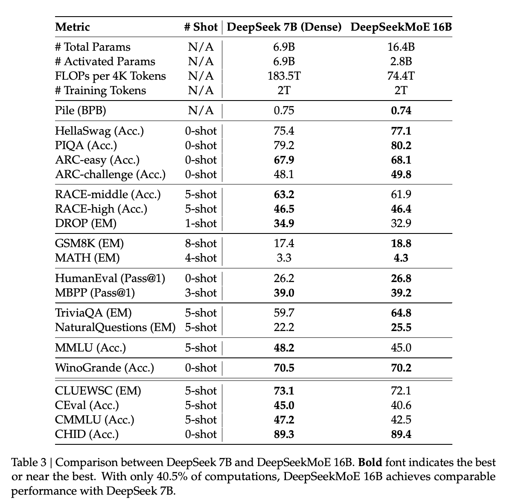
评估结果见表 3，可得到以下观察：（1）总体而言，DeepSeekMoE 16B 仅用约 40% 的计算量，就能达到与 DeepSeek 7B 相当的性能。（2）DeepSeekMoE 16B 在语言建模与知识密集型任务上表现出明显优势，例如 Pile、HellaSwag、TriviaQA 和 NaturalQuestions。考虑到 MoE 模型的 FFN 参数量远大于 attention 参数量，这些结果与 Transformer 中 FFN 具有知识记忆能力的观点一致（Dai et al., 2022a）。（3）相比在其他任务上的优秀表现，DeepSeekMoE 在处理选择题任务上存在局限。这一不足源自 DeepSeekMoE 16B 有限的 attention 参数量（DeepSeekMoE 16B 的 attention 参数仅约 0.5B，而 DeepSeek 7B 为 2.5B）。此前我们对 DeepSeek 7B 的研究表明，attention 容量与选择题任务的表现正相关。例如，采用 MQA（Shazeer, 2019）的 DeepSeek 7B MQA 也难以应对 MMLU 类任务。此外，为更全面地了解 DeepSeekMoE 16B 的训练过程，（接下页）
（接第 17 页）
我们还在附录 C 中提供了 DeepSeekMoE 16B 和 DeepSeek 7B（Dense）训练期间的基准曲线，供参考。
关键在于，DeepSeekMoE 16B 的参数量适中，因此可以在显存为 40GB 的 GPU 上单设备部署。经过适当的算子优化，它可以达到接近 7B 稠密模型 2.5 倍的推理速度。
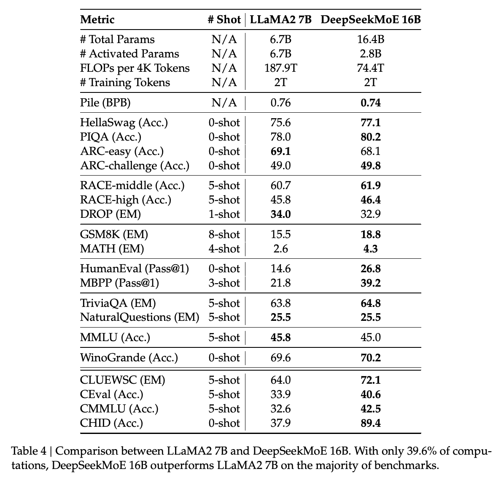
与 LLaMA2 7B 的内部比较。在开源模型中，我们主要将 DeepSeekMoE 16B 与 LLaMA2 7B（Touvron et al., 2023b）比较，后者是一个知名且强大的开源语言模型，参数量为 6.7B。DeepSeekMoE 16B 和 LLaMA2 7B 都在 2T token 上预训练。相比 LLaMA2 7B，DeepSeekMoE 的总参数量为其 245%，但只需其 39.6% 的计算量。内部基准结果见表 4，可以得到以下观察。（1）在所评估的基准中，DeepSeekMoE 16B 仅用约 40% 的计算量，就在大多数基准上优于 LLaMA2 7B。（2）DeepSeekMoE 16B 的数学推理和代码生成能力（接下页）
（接第 18 页）
强于 LLaMA2 7B，这归因于我们的预训练语料中包含更丰富的数学与代码相关文本。（3）由于预训练语料中存在中文文本，DeepSeekMoE 16B 在中文基准上相比 LLaMA2 7B 有显著性能优势。（4）尽管训练所用的英文文本更少，DeepSeekMoE 16B 在英语理解或知识密集型基准上仍达到与 LLaMA2 7B 相当或更好的表现，体现了 DeepSeekMoE 16B 的出色能力。
Open LLM Leaderboard 上的评估。除内部评估外，我们还在 Open LLM Leaderboard 上评估 DeepSeekMoE 16B，并与其他开源模型比较。除 LLaMA2 7B 外，我们考虑了更广泛的开源模型，包括 LLaMA 7B（Touvron et al., 2023a）、Falcon 7B（Almazrouei et al., 2023）、GPT-J 6B（Wang and Komatsuzaki, 2021）、RedPajama-INCITE 7B 和 3B（Together-AI, 2023）、Open LLaMA 7B 和 3B（Geng and Liu, 2023）、OPT 2.7B（Zhang et al., 2022）、Pythia 2.8B（Biderman et al., 2023）、GPT-neo 2.7B（Black et al., 2021）以及 BLOOM 3B（Scao et al., 2022）。图 1 所示的评估结果表明，DeepSeekMoE 16B 始终大幅优于激活参数量相近的模型。此外，它的表现与激活参数量约为其 2.5 倍的 LLaMA2 7B 相当。
此前研究表明，MoE 模型通常无法从微调中获得显著收益（Artetxe et al., 2022; Fedus et al., 2021）。然而，Shen et al.（2023）的发现表明，MoE 模型确实可以从指令微调中受益。为评估 DeepSeekMoE 16B 是否能从微调中受益，我们进行 SFT，在 DeepSeekMoE 16B 基础上构建聊天模型。实验结果表明，DeepSeekMoE Chat 16B 同样能达到与 LLaMA2 SFT 7B 和 DeepSeek Chat 7B 相当的性能。
训练数据。为训练聊天模型，我们在内部整理的数据上进行 SFT，共包含 1.4M 个训练样本。该数据集覆盖广泛类别，包括数学、代码、写作、问答、推理、摘要等。大多数 SFT 训练数据为英文和中文，使聊天模型能够灵活用于双语场景。
超参数。SFT 期间，我们将 batch 大小设为 1024 个样本，采用 AdamW 优化器（Loshchilov and Hutter, 2019）训练 8 个 epoch。最大序列长度为 4K，并尽可能紧密地打包训练样本，直到达到序列长度上限。SFT 时不使用 dropout，直接将学习率设为固定的 \(10^{-5}\)，不采用任何学习率调度策略。
评估基准。评估聊天模型时，我们采用与第 5.1.3 节类似的基准，并作如下调整：（1）去除 Pile（Gao et al., 2020），因为聊天模型很少用于纯语言建模。（2）去除（接下页）
（接第 19 页）
CHID（Zheng et al., 2019），因为观察到的结果不稳定，难以得出可靠结论。（3）额外加入 BBH（Suzgun et al., 2022），以更全面地评估聊天模型的推理能力。
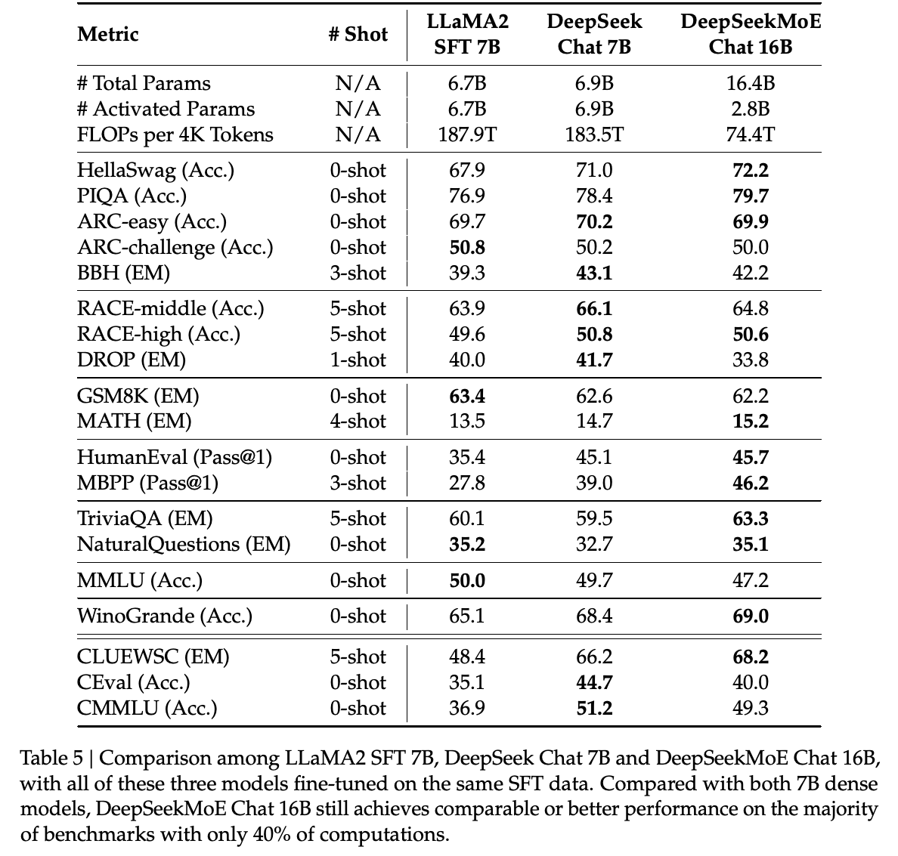
基线。为验证 DeepSeekMoE 16B 对齐后的潜力，我们对 LLaMA2 7B、DeepSeek 7B 和 DeepSeekMoE 16B 进行 SFT，使用完全相同的微调数据以确保公平。相应地，我们构建了三个聊天模型：LLaMA2 SFT 7B3、DeepSeek Chat 7B 和 DeepSeekMoE Chat 16B。随后，我们在广泛的下游任务中，将 DeepSeekMoE Chat 16B 与另外两个稠密聊天模型（FLOPs 约为其 2.5 倍）进行比较。
3 我们使用 LLaMA2 SFT 这一名称，以区别于官方 LLaMA2 Chat（Touvron et al., 2023b）模型。
结果。评估结果见表 5。主要观察包括：（1）DeepSeekMoE Chat 16B 仅消耗约 40% 的计算量，就在语言理解与推理（PIQA、ARC、BBH）、机器阅读理解（RACE）、数学（GSM8K、MATH）和知识密集型任务（TriviaQA、NaturalQuestions）中达到与 7B 稠密模型相当的性能。（2）在代码生成任务上，DeepSeekMoE Chat 16B 显著优于 LLaMA2 SFT 7B，在 HumanEval 和 MBPP 上取得明显提升。此外，它也超过了 DeepSeek Chat 7B。（3）在包括 MMLU、CEval 和 CMMLU 的选择题问答基准上，DeepSeekMoE Chat 16B 仍落后于 DeepSeek Chat 7B，与基础模型的观察一致（第 5.2.1 节）。不过，值得注意的是，SFT 后，DeepSeekMoE 16B 与 DeepSeek 7B 的性能差距缩小了。（4）得益于双语语料预训练，DeepSeekMoE Chat 16B 在所有中文基准上都显著优于 LLaMA2 SFT 7B。这些结果展示了 DeepSeekMoE 16B 在中文和英文方面的均衡能力，增强了其在多种场景中的通用性与适用性。总之，聊天模型的评估凸显了 DeepSeekMoE 16B 从对齐中受益的潜力，并验证了它仅用约 40% 的计算量即可获得与稠密模型相当性能的持续优势。
受到 DeepSeekMoE 16B 出色表现的鼓舞，我们进一步初步尝试将 DeepSeekMoE 扩展至 145B。在这项初步研究中，DeepSeekMoE 145B 在 245B token 上训练，但已表现出相对于 GShard 架构的持续优势，并展现出匹敌或超越 DeepSeek 67B（Dense）的潜力。此外，在完成 DeepSeekMoE 145B 的最终版本和完整训练后，我们也计划将其公开发布。
训练数据与分词。对于 DeepSeekMoE 145B，我们使用与 DeepSeekMoE 16B 完全相同的训练语料和 tokenizer，唯一区别是本次初步研究中 DeepSeekMoE 145B 在 245B token 上训练。
模型设置。对于 DeepSeekMoE 145B，我们将 Transformer 层数设为 62，隐藏维度设为 4096。我们采用 MHA，共有 32 个 attention 头，每个头的维度为 128。在初始化方面，所有可学习参数均以 0.006 的标准差随机初始化。与 DeepSeekMoE 16B 一样，我们也将除第一层以外的所有 FFN 替换为 MoE 层。每个 MoE 层包含 4 个共享专家和 128 个路由专家，每个专家的大小为标准 FFN 的 0.125 倍。每个 token 都会被路由到这 4 个共享专家及 128 个路由专家中的 12 个。在此配置下，DeepSeekMoE 145 的总参数量约为 144.6B，激活参数量约为 22.2B。
训练设置。我们采用 AdamW 优化器（Loshchilov and Hutter, 2019），超参数为 \(\beta _{1} = 0.9\)、\(\beta _{2} = 0.95\)、weight_decay = 0.1。对于 DeepSeekMoE 145B 的初步研究，我们使用 warmup 后保持恒定的学习率调度器。首先，在前 2K 步中，学习率从 0 线性增至最大值。（接下页）
（接第 21 页）
随后，在剩余训练过程中，学习率保持不变。DeepSeekMoE 145B 的最大学习率设为 \(3.0 \times 10^{-4}\)，gradient 裁剪范数设为 1.0。Batch 大小设为 4.5K，最大序列长度为 4K，因此每个训练 batch 包含 18M token。我们将 DeepSeekMoE 145B 训练 13,000 步，达到 245B 训练 token。训练中同样不使用 dropout。我们通过 PP 将模型不同层部署到不同设备上；对于每一层，所有路由专家均匀部署在 4 个设备上（即 EP 与 DP 结合）。由于 DeepSeekMoE 145B 使用 EP，需要考虑设备级负载均衡，以减少计算瓶颈。因此，我们将设备级均衡系数设为 0.05，以鼓励设备间计算均衡。此外，我们仍设置较小的专家级均衡系数 0.003，以防止路由坍塌。
评估基准。我们采用与 DeepSeekMoE 16B 完全相同的内部基准评估 DeepSeekMoE 145B（见第 5.1.3 节）。
基线。除 DeepSeekMoE 145B 外，我们还考虑三个模型用于比较。DeepSeek 67B（Dense）是总参数量为 67.4B 的稠密模型（模型和训练细节见 DeepSeek-AI（2024））。GShard 137B 的隐藏维度与层数与 DeepSeekMoE 145B 相同，但遵循 GShard 架构。需要注意，DeepSeekMoE 145B 为提高计算效率，将每个专家的中间隐藏维度对齐为 64 的倍数，因此模型规模比 GShard 137B 大 6%。DeepSeekMoE 142B（Half Activated）的架构与 DeepSeekMoE 145B 类似，但只包含 2 个共享专家，且只激活 128 个路由专家中的 6 个。值得注意的是，所有比较模型，包括 DeepSeekMoE 145B，都使用相同的训练语料。此外，参与比较的所有 MoE 模型都从头训练，并使用相同训练超参数。
结果。从表 6 所示的评估结果中，可得到以下观察：（1）尽管总参数量和计算量相近，DeepSeekMoE 145B 仍显著优于 GShard 137B，再次凸显了 DeepSeekMoE 架构的优势。（2）总体而言，DeepSeekMoE 145B 仅用 28.5% 的计算量，就获得与 DeepSeek 67B（Dense）相当的性能。与 DeepSeekMoE 16B 的发现一致，DeepSeekMoE 145B 在语言建模和知识密集型任务上表现出明显优势，但在选择题任务上存在局限。（3）在更大规模下，DeepSeekMoE 142B（Half Activated）的性能并未明显落后于 DeepSeekMoE 145B。此外，尽管激活专家参数量仅为一半，DeepSeekMoE 142B（Half Activated）仍能以仅 18.2% 的计算量匹敌 DeepSeek 67B（Dense）。它也优于 GShard 137B，与第 4.5 节的结论一致。
MoE 技术最早由 Jacobs et al.（1991）和 Jordan and Jacobs（1994）提出，用独立的专家模块处理不同样本。Shazeer et al.（2017）将 MoE 引入语言模型训练，并构建了基于 LSTM（Hochreiter and Schmidhuber, 1997）的大规模 MoE 模型。随着 Transformer 成为 NLP 中最流行的架构，（接下页）
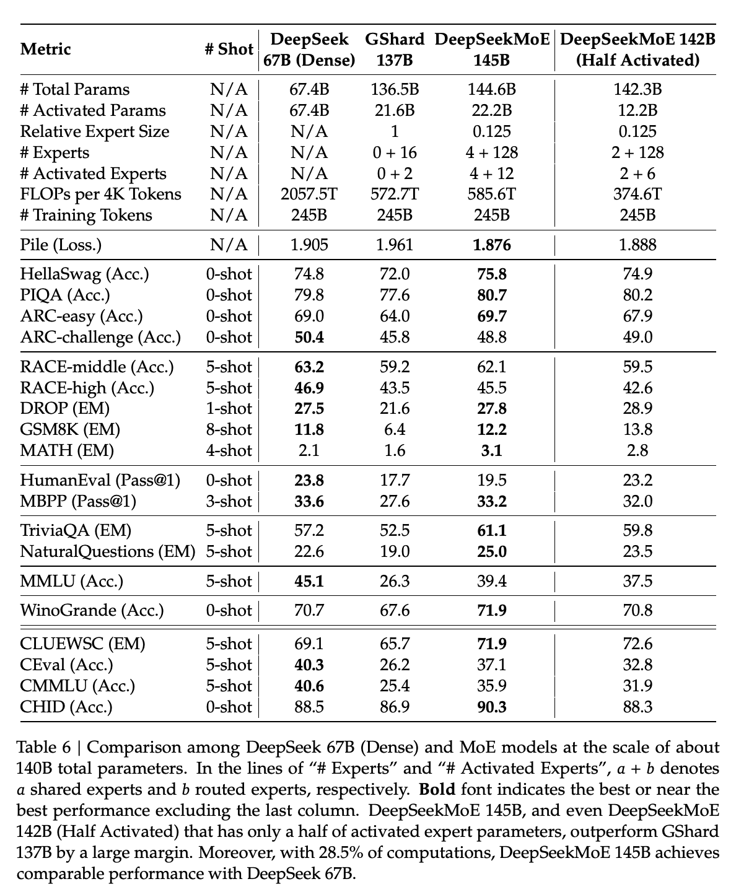
（接第 22 页）
许多研究尝试将 Transformer 中的 FFN 扩展为 MoE 层，以构建 MoE 语言模型。GShard（Lepikhin et al., 2021）和 Switch Transformer（Fedus et al., 2021）是先驱，采用可学习的 top-2 或 top-1 路由策略，将 MoE 语言模型扩展至极大规模。Hash Layer（Roller et al., 2021）和 StableMoE（Dai et al., 2022b）使用固定路由策略，以实现更稳定的路由与训练。Zhou et al.（2022）提出专家选择路由策略，其中每个 token 可以分配给不同数量的专家。Zoph（2022）关注 MoE 模型训练不稳定和微调困难的问题，（接下页）
（接第 23 页）
并提出 ST-MoE 来克服这些挑战。除对 MoE 架构与训练策略的研究外，近年来也出现了许多基于现有 MoE 架构的大规模语言或多模态模型（Du et al., 2022; Lin et al., 2021; Ren et al., 2023; Xue et al., 2023）。总体而言，此前大多数 MoE 模型基于传统的 top-1 或 top-2 路由策略，专家专门化仍有很大的提升空间。为此，DeepSeekMoE 架构旨在最大程度地提高专家专门化。
本文介绍了面向 MoE 语言模型的 DeepSeekMoE 架构，目标是实现极致专家专门化。通过细粒度专家分割和共享专家分离，DeepSeekMoE 相比主流 MoE 架构实现了显著更高的专家专门化程度和性能。从 2B 参数的较小规模开始，我们验证了 DeepSeekMoE 的优势，展示了其接近 MoE 模型性能上界的能力。此外，我们提供了实证依据，表明 DeepSeekMoE 的专家专门化程度高于 GShard。
将模型扩展到总参数量为 16B 的更大规模后，我们在 2T token 上训练 DeepSeekMoE 16B，并证明它仅用约 40% 的计算量，即可获得与 DeepSeek 7B 和 LLaMA2 7B 相当的出色性能。此外，我们还进行 SFT 来实现对齐，在 DeepSeekMoE 16B 基础上构建 MoE 聊天模型，进一步展示其适应性和通用性。随后，我们初步探索将 DeepSeekMoE 扩展至 145B 参数。我们发现，DeepSeekMoE 145B 仍保持相对于 GShard 架构的显著优势，并且只使用 28.5%（甚至可能是 18.2%）的计算量，就能获得与 DeepSeek 67B 相当的性能。
为研究用途，我们公开发布 DeepSeekMoE 16B 的模型 checkpoint，它可以部署在显存为 40GB 的单张 GPU 上。我们希望这项工作为学术界和工业界提供有价值的见解，并推动大规模语言模型加速发展。
E. Almazrouei, H. Alobeidli, A. Alshamsi, A. Cappelli, R. Cojocaru, M. Debbah, E. Goffinet, D. Heslow, J. Launay, Q. Malartic, B. Noune, B. Pannier, and G. Penedo. Falcon-40B：具有最先进性能的开放 LLM, 2023.
M. Artetxe, S. Bhosale, N. Goyal, T. Mihaylov, M. Ott, S. Shleifer, X. V. Lin, J. Du, S. Iyer, R. Pasunuru, G. Anantharaman, X. Li, S. Chen, H. Akin, M. Baines, L. Martin, X. Zhou, P. S. Koura, B. O’Horo, J. Wang, L. Zettlemoyer, M. T. Diab, Z. Kozareva, and V. Stoyanov. 通过 MoE 进行高效的大规模语言建模. 载于 Y. Goldberg, Z. Kozareva, and Y. Zhang, 编， 2022 年自然语言处理经验方法会议论文集, EMNLP 2022, 阿拉伯联合酋长国阿布扎比, 12 月 7-11, 2022, 页码 11699–11732. 计算语言学协会, 2022. DOI：10.18653/V1/2022.EMNLP-MAIN.804. 链接 https://doi.org/10.18653/v1/2022.emnlp-main.804.
J. Austin, A. Odena, M. Nye, M. Bosma, H. Michalewski, D. Dohan, E. Jiang, C. Cai, M. Terry, Q. Le, et al. 使用 LLM 进行程序合成. arXiv 预印本 arXiv:2108.07732, 2021.
S. Biderman, H. Schoelkopf, Q. G. Anthony, H. Bradley, K. O’Brien, E. Hallahan, M. A. Khan, S. Purohit, U. S. Prashanth, E. Raff, A. Skowron, L. Sutawika, and O. van der Wal. Pythia：用于分析 LLM 训练和规模扩展的套件. 载于 A. Krause, E. Brunskill, K. Cho, B. Engelhardt, S. Sabato, and J. Scarlett, 编， 国际机器学习会议, ICML 2023, 23-29 7 月 2023, 美国夏威夷州檀香山, 卷 202 of 机器学习研究论文集, 页码 2397–2430. PMLR, 2023. 链接 https://proceedings.mlr.press/v202/biderman23a.html.
Y. Bisk, R. Zellers, R. L. Bras, J. Gao, and Y. Choi. PIQA：以自然语言推理物理常识. 载于 第 34 届 AAAI 人工智能会议, AAAI 2020, 第 32 届人工智能创新应用会议, IAAI 2020, 第 10 届 AAAI 人工智能教育进展研讨会, EAAI 2020, 美国纽约州纽约市, 2 月 7-12, 2020, 页码 7432–7439. AAAI Press, 2020. DOI：10.1609/aaai.v34i05.6239. 链接 https://doi.org/10.1609/aaai.v34i05.6239.
S. Black, L. Gao, P. Wang, C. Leahy, and S. Biderman. GPT-Neo：使用 Mesh-Tensorflow 进行大规模自回归语言建模, 3 月 2021. 链接 https://doi.org/10.5281/zenodo.5297715. 如果使用此条目，请使用这些元数据进行引用。
T. B. Brown, B. Mann, N. Ryder, M. Subbiah, J. Kaplan, P. Dhariwal, A. Neelakantan, P. Shyam, G. Sastry, A. Askell, S. Agarwal, A. Herbert-Voss, G. Krueger, T. Henighan, R. Child, A. Ramesh, D. M. Ziegler, J. Wu, C. Winter, C. Hesse, M. Chen, E. Sigler, M. Litwin, S. Gray, B. Chess, J. Clark, C. Berner, S. McCandlish, A. Radford, I. Sutskever, and D. Amodei. 语言模型是少样本学习器. 载于 神经信息处理系统进展 33: 神经信息处理系统年会 2020, 2020. 链接 https://proceedings.neurips.cc/paper/2020/hash/1457c0d6bfcb4967418bfb8ac142f64a-Abstract.html.
M. Chen, J. Tworek, H. Jun, Q. Yuan, H. P. de Oliveira Pinto, J. Kaplan, H. Edwards, Y. Burda, N. Joseph, G. Brockman, A. Ray, R. Puri, G. Krueger, M. Petrov, H. Khlaaf, G. Sastry, P. Mishkin, B. Chan, S. Gray, N. Ryder, M. Pavlov, A. Power, L. Kaiser, M. Bavarian, C. Winter, P. Tillet, F. P. Such, D. Cummings, M. Plappert, F. Chantzis, E. Barnes, A. Herbert-Voss, W. H. Guss, A. Nichol, A. Paino, N. Tezak, J. Tang, I. Babuschkin, S. Balaji, S. Jain, W. Saunders, C. Hesse, A. N. Carr, J. Leike, J. Achiam, V. Misra, E. Morikawa, A. Radford, M. Knight, M. Brundage, M. Murati, K. Mayer, P. Welinder, B. McGrew, D. Amodei, S. McCandlish, I. Sutskever, and W. Zaremba. 评估在代码上训练的 LLM. CoRR, abs/2107.03374, 2021. 链接 https://arxiv.org/abs/2107.03374.
P. Clark, I. Cowhey, O. Etzioni, T. Khot, A. Sabharwal, C. Schoenick, and O. Tafjord. 认为你已经解决了问答？试试 ARC——AI2 推理挑战. CoRR, abs/1803.05457, 2018. 链接 http://arxiv.org/abs/1803.05457.
K. Cobbe, V. Kosaraju, M. Bavarian, M. Chen, H. Jun, L. Kaiser, M. Plappert, J. Tworek, J. Hilton, R. Nakano, et al. 训练验证器以解决数学应用题. arXiv 预印本 arXiv:2110.14168, 2021.
D. Dai, L. Dong, Y. Hao, Z. Sui, B. Chang, and F. Wei. 预训练 Transformer 中的知识神经元. 载于 S. Muresan, P. Nakov, and A. Villavicencio, 编， 计算语言学协会第 60 届年会论文集（第 1 卷：长论文）, ACL 2022, 爱尔兰都柏林, 5 月 22-27, 2022, 页码 8493–8502. 计算语言学协会, 2022a. DOI：10.18653/V1/2022.ACL-LONG.581. 链接 https://doi.org/10.18653/v1/2022.acl-long.581.
D. Dai, L. Dong, S. Ma, B. Zheng, Z. Sui, B. Chang, and F. Wei. StableMoE：MoE 的稳定路由策略. 载于 S. Muresan, P. Nakov, and A. Villavicencio, 编， 计算语言学协会第 60 届年会论文集（第 1 卷：长论文）, ACL 2022, 爱尔兰都柏林, 5 月 22-27, 2022, 页码 7085–7095. 计算语言学协会, 2022b. DOI：10.18653/V1/2022.ACL-LONG.489.链接 https://doi.org/10.18653/v1/2022.acl-long.489.
DeepSeek-AI. DeepSeek LLM：以长期主义扩展开源语言模型. arXiv 预印本 arXiv:2401.02954, 2024.
N. Du, Y. Huang, A. M. Dai, S. Tong, D. Lepikhin, Y. Xu, M. Krikun, Y. Zhou, A. W. Yu, O. Firat, B. Zoph, L. Fedus, M. P. Bosma, Z. Zhou, T. Wang, Y. E. Wang, K. Webster, M. Pellat, K. Robinson, K. S. Meier-Hellstern, T. Duke, L. Dixon, K. Zhang, Q. V. Le, Y. Wu, Z. Chen, and C. Cui. GLaM：通过 MoE 高效扩展语言模型. 载于 国际机器学习会议, ICML 2022, 17-23 7 月 2022, 美国马里兰州巴尔的摩, 卷 162 of 机器学习研究论文集, 页码 5547–5569. PMLR, 2022. 链接 https://proceedings.mlr.press/v162/du22c.html.
D. Dua, Y. Wang, P. Dasigi, G. Stanovsky, S. Singh, and M. Gardner. DROP：需要对段落进行离散推理的阅读理解基准. 载于 J. Burstein, C. Doran, and T. Solorio, 编， 计算语言学协会北美分会 2019 年会议论文集：人类语言技术, NAACL-HLT 2019, 美国明尼苏达州明尼阿波利斯, 6 月 2-7, 2019, 第 1 卷（长论文与短论文）, 页码 2368– 2378. 计算语言学协会, 2019. DOI：10.18653/V1/N19-1246. 链接 https://doi.org/10.18653/v1/n19-1246.
W. Fedus, B. Zoph, and N. Shazeer. Switch Transformer：通过简单高效的稀疏性扩展至万亿参数模型. CoRR, abs/2101.03961, 2021. 链接 https://arxiv.org/abs/2101.03961.
L. Gao, S. Biderman, S. Black, L. Golding, T. Hoppe, C. Foster, J. Phang, H. He, A. Thite, N. Nabeshima, et al. The Pile：用于语言建模的 800GB 多样化文本数据集. arXiv 预印本 arXiv:2101.00027, 2020.
X. Geng and H. Liu. OpenLLaMA：LLaMA 的开放复现, 5 月 2023. 链接 https://github.com/openlm-research/open_llama.
A. Harlap, D. Narayanan, A. Phanishayee, V. Seshadri, N. R. Devanur, G. R. Ganger, and P. B. Gibbons. PipeDream：快速高效的 PP DNN 训练. CoRR, abs/1806.03377, 2018. 链接 http://arxiv.org/abs/1806.03377.
D. Hendrycks, C. Burns, S. Basart, A. Zou, M. Mazeika, D. Song, and J. Steinhardt. 衡量大规模多任务语言理解. arXiv 预印本 arXiv:2009.03300, 2020.
D. Hendrycks, C. Burns, S. Kadavath, A. Arora, S. Basart, E. Tang, D. Song, and J. Steinhardt. 使用 MATH 数据集衡量数学问题求解能力, 2021.
High-Flyer. HAI-LLM：用于训练大模型的高效轻量工具, 2023. 链接 https://www.high-flyer.cn/en/blog/hai-llm.
S. Hochreiter and J. Schmidhuber. 长短期记忆. 神经计算, 9(8):1735–1780, 1997. 链接 https://doi.org/10.1162/neco.1997.9.8.1735.
J. Hoffmann, S. Borgeaud, A. Mensch, E. Buchatskaya, T. Cai, E. Rutherford, D. de Las Casas, L. A. Hendricks, J. Welbl, A. Clark, T. Hennigan, E. Noland, K. Millican, G. van den Driessche, B. Damoc, A. Guy, S. Osindero, K. Simonyan, E. Elsen, J. W. Rae, O. Vinyals, and L. Sifre. 训练计算最优的 LLM. CoRR, abs/2203.15556, 2022. DOI：10.48550/arXiv.2203.15556. 链接 https://doi.org/10.48550/arXiv.2203.15556.
Y. Huang, Y. Bai, Z. Zhu, J. Zhang, J. Zhang, T. Su, J. Liu, C. Lv, Y. Zhang, J. Lei, et al. C-Eval：面向基础模型的多层次、多学科中文评估套件. arXiv 预印本 arXiv:2305.08322, 2023.
R. A. Jacobs, M. I. Jordan, S. J. Nowlan, and G. E. Hinton. 局部专家的自适应混合. 神经计算, 3(1):79–87, 1991. 链接 https://doi.org/10.1162/neco.1991.3.1.79.
M. I. Jordan and R. A. Jacobs. 分层 MoE 与 EM 算法. 神经计算, 6(2):181–214, 1994. 链接 https://doi.org/10.1162/neco.1994.6.2.181.
M. Joshi, E. Choi, D. Weld, and L. Zettlemoyer. TriviaQA：用于阅读理解的大规模远程监督挑战数据集. arXiv 电子预印本，文章编号 arXiv:1705.03551, 2017.
V. A. Korthikanti, J. Casper, S. Lym, L. McAfee, M. Andersch, M. Shoeybi, and B. Catanzaro. 减少大型 Transformer 模型中的激活重计算. 机器学习与系统论文集, 5, 2023.
T. Kwiatkowski, J. Palomaki, O. Redfield, M. Collins, A. Parikh, C. Alberti, D. Epstein, I. Polosukhin, M. Kelcey, J. Devlin, K. Lee, K. N. Toutanova, L. Jones, M.-W. Chang, A. Dai, J. Uszkoreit, Q. Le, and S. Petrov. Natural Questions：用于问答研究的基准. 计算语言学协会会刊, 2019.
G. Lai, Q. Xie, H. Liu, Y. Yang, and E. H. Hovy. RACE：源自考试的大规模阅读理解数据集. 载于 M. Palmer, R. Hwa, and S. Riedel, 编， 2017 年自然语言处理经验方法会议论文集, EMNLP 2017, 丹麦哥本哈根, 9 月 9-11, 2017, 页码 785–794. 计算语言学协会, 2017. DOI：10.18653/V1/D17-1082. 链接 https://doi.org/10.18653/v1/d17-1082.
D. Lepikhin, H. Lee, Y. Xu, D. Chen, O. Firat, Y. Huang, M. Krikun, N. Shazeer, and Z. Chen. GShard：通过条件计算与自动分片扩展巨型模型. 载于 第 9 届 国际学习表征会议, ICLR 2021. OpenReview.net, 2021. 链接 https://openreview.net/forum?id=qrwe7XHTmYb.
H. Li, Y. Zhang, F. Koto, Y. Yang, H. Zhao, Y. Gong, N. Duan, and T. Baldwin. CMMLU: 衡量大规模多任务语言理解 in Chinese. arXiv 预印本 arXiv:2306.09212, 2023.
J. Lin, R. Men, A. Yang, C. Zhou, M. Ding, Y. Zhang, P. Wang, A. Wang, L. Jiang, X. Jia, J. Zhang, J. Zhang, X. Zou, Z. Li, X. Deng, J. Liu, J. Xue, H. Zhou, J. Ma, J. Yu, Y. Li, W. Lin, J. Zhou, J. Tang, and H. Yang. M6：中文多模态预训练模型. CoRR, abs/2103.00823, 2021. 链接 https://arxiv.org/abs/2103.00823.
S. Lin, J. Hilton, and O. Evans. TruthfulQA：衡量模型如何模仿人类谬误. 载于 S. Muresan, P. Nakov, and A. Villavicencio, 编， 计算语言学协会第 60 届年会论文集（第 1 卷：长论文）, ACL 2022, Dublin,
（接第 27 页最后一条参考文献）
爱尔兰, 5 月 22-27, 2022, 页码 3214–3252. 计算语言学协会, 2022. DOI：10.18653/V1/2022.ACL-LONG.229. 链接 https://doi.org/10.18653/v1/2022.acl-long.229.
I. Loshchilov and F. Hutter. 解耦权重衰减正则化. 载于 第 7 届 国际学习表征会议, ICLR 2019, 美国路易斯安那州新奥尔良, 5 月 6-9, 2019. OpenReview.net, 2019. 链接 https://openreview.net/forum?id=Bkg6RiCqY7.
D. Narayanan, M. Shoeybi, J. Casper, P. LeGresley, M. Patwary, V. Korthikanti, D. Vainbrand, P. Kashinkunti, J. Bernauer, B. Catanzaro, et al. 使用 Megatron-LM 在 GPU 集群上高效训练大规模语言模型. 载于 国际高性能计算、网络、存储与分析会议论文集, 页码 1–15, 2021.
OpenAI. GPT-4 技术报告. CoRR, abs/2303.08774, 2023. DOI：10.48550/arXiv.2303.08774.链接 https://doi.org/10.48550/arXiv.2303.08774.
S. Rajbhandari, J. Rasley, O. Ruwase, and Y. He. ZeRO：面向万亿参数模型训练的内存优化. 载于 C. Cuicchi, I. Qualters, and W. T. Kramer, 编， 国际高性能计算、网络、存储与分析会议论文集, SC 2020, 线上会议 / 美国佐治亚州亚特兰大, 11 月 9-19, 2020, 页码 20. IEEE/ACM, 2020. DOI：10.1109/SC41405.2020.00024. 链接 https://doi.org/10.1109/SC41405.2020.00024.
S. Rajbhandari, C. Li, Z. Yao, M. Zhang, R. Y. Aminabadi, A. A. Awan, J. Rasley, and Y. He. DeepSpeed-MoE：推进 MoE 推理与训练，支撑下一代 AI 规模. 载于 K. Chaudhuri, S. Jegelka, L. Song, C. Szepesvári, G. Niu, and S. Sabato, 编， 国际机器学习会议, ICML 2022, 17-23 7 月 2022, 美国马里兰州巴尔的摩, 卷 162 of 机器学习研究论文集, 页码 18332–18346. PMLR, 2022. 链接 https://proceedings.mlr.press/v162/rajbhandari22a.html.
X. Ren, P. Zhou, X. Meng, X. Huang, Y. Wang, W. Wang, P. Li, X. Zhang, A. Podolskiy, G. Arshinov, A. Bout, I. Piontkovskaya, J. Wei, X. Jiang, T. Su, Q. Liu, and J. Yao. Pangu-\(\Sigma\)：通过稀疏异构计算迈向万亿参数语言模型. CoRR, abs/2303.10845, 2023. 链接 https://doi.org/10.48550/arXiv.2303.10845.
S. Roller, S. Sukhbaatar, A. Szlam, and J. Weston. 大型稀疏模型的哈希层. CoRR, abs/2106.04426, 2021. 链接 https://arxiv.org/abs/2106.04426.
K. Sakaguchi, R. L. Bras, C. Bhagavatula, and Y. Choi. WinoGrande：大规模对抗式 Winograd Schema 挑战, 2019.
T. L. Scao, A. Fan, C. Akiki, E. Pavlick, S. Ilic, D. Hesslow, R. Castagné, A. S. Luccioni, F. Yvon, M. Gallé, J. Tow, A. M. Rush, S. Biderman, A. Webson, P. S. Ammanamanchi, T. Wang, B. Sagot, N. Muennighoff, A. V. del Moral, O. Ruwase, R. Bawden, S. Bekman, A. McMillan-Major, I. Beltagy, H. Nguyen, L. Saulnier, S. Tan, P. O. Suarez, V. Sanh, H. Laurençon, Y. Jernite, J. Launay, M. Mitchell, C. Raffel, A. Gokaslan, A. Simhi, A. Soroa, A. F. Aji, A. Alfassy, A. Rogers, A. K. Nitzav, C. Xu, C. Mou, C. Emezue, C. Klamm, C. Leong, D. van Strien, D. I. Adelani, and et al. BLOOM：具有 176B 参数、开放访问的多语言模型. CoRR, abs/2211.05100, 2022. DOI：10.48550/ARXIV.2211.05100. 链接 https://doi.org/10.48550/arXiv.2211.05100.
R. Sennrich, B. Haddow, and A. Birch. 使用子词单元对罕见词进行神经机器翻译. 载于 计算语言学协会第 54 届年会论文集, ACL 2016, 8 月 7-12, 2016, 德国柏林, 第 1 卷：长论文. 计算语言学协会, 2016. DOI：10.18653/V1/P16-1162. 链接 https://doi.org/10.18653/v1/p16-1162.
N. Shazeer. 快速 Transformer decoding：只需一个写入头. CoRR, abs/1911.02150, 2019. 链接 http://arxiv.org/abs/1911.02150.
N. Shazeer, A. Mirhoseini, K. Maziarz, A. Davis, Q. V. Le, G. E. Hinton, and J. Dean. 超大规模神经网络：稀疏门控 MoE 层. 载于 第 5 届 国际学习表征会议, ICLR 2017. OpenReview.net, 2017. 链接 https://openreview.net/forum?id=B1ckMDqlg.
S. Shen, L. Hou, Y. Zhou, N. Du, S. Longpre, J. Wei, H. W. Chung, B. Zoph, W. Fedus, X. Chen, T. Vu, Y. Wu, W. Chen, A. Webson, Y. Li, V. Zhao, H. Yu, K. Keutzer, T. Darrell, and D. Zhou. Flan-MoE：通过稀疏 MoE 扩展指令微调语言模型. CoRR, abs/2305.14705, 2023. DOI：10.48550/ARXIV.2305.14705. 链接 https://doi.org/10.48550/arXiv.2305.14705.
M. Shoeybi, M. Patwary, R. Puri, P. LeGresley, J. Casper, and B. Catanzaro. Megatron-LM：使用模型并行训练数十亿参数语言模型. arXiv 预印本 arXiv:1909.08053, 2019.
M. Suzgun, N. Scales, N. Schärli, S. Gehrmann, Y. Tay, H. W. Chung, A. Chowdhery, Q. V. Le, E. H. Chi, D. Zhou, et al. 具有挑战性的 BIG-Bench 任务，以及 CoT 能否解决它们. arXiv 预印本 arXiv:2210.09261, 2022.
P. Tillet, H. T. Kung, and D. Cox. Triton：用于分块神经网络计算的中间语言与编译器. 载于 第 3 届 ACM SIGPLAN 机器学习与编程语言国际研讨会论文集, MAPL 2019, 页码 10–19, 美国纽约州纽约市, 2019. 美国计算机协会. ISBN 9781450367196. DOI：10.1145/3315508.3329973. 链接 https://doi.org/10.1145/3315508.3329973.
Together-AI. RedPajama-Data：复现 LLaMA 训练数据集的开源方案, 4 月 2023. 链接 https://github.com/togethercomputer/RedPajama-Data.
H. Touvron, T. Lavril, G. Izacard, X. Martinet, M. Lachaux, T. Lacroix, B. Rozière, N. Goyal, E. Hambro, F. Azhar, A. Rodriguez, A. Joulin, E. Grave, and G. Lample. LLaMA：开放高效的基础语言模型. CoRR, abs/2302.13971, 2023a. DOI：10.48550/arXiv.2302.13971. 链接 https://doi.org/10.48550/arXiv.2302.13971.
H. Touvron, L. Martin, K. Stone, P. Albert, A. Almahairi, Y. Babaei, N. Bashlykov, S. Batra, P. Bhargava, S. Bhosale, D. Bikel, L. Blecher, C. Canton-Ferrer, M. Chen, G. Cucurull, D. Esiobu, J. Fernandes, J. Fu, W. Fu, B. Fuller, C. Gao, V. Goswami, N. Goyal, A. Hartshorn, S. Hosseini, R. Hou, H. Inan, M. Kardas, V. Kerkez, M. Khabsa, I. Kloumann, A. Korenev, P. S. Koura, M. Lachaux, T. Lavril, J. Lee, D. Liskovich, Y. Lu, Y. Mao, X. Martinet, T. Mihaylov, P. Mishra, I. Molybog, Y. Nie, A. Poulton, J. Reizenstein, R. Rungta, K. Saladi, A. Schelten, R. Silva, E. M. Smith, R. Subramanian, X. E. Tan, B. Tang, R. Taylor, A. Williams, J. X. Kuan, P. Xu, Z. Yan, I. Zarov, Y. Zhang, A. Fan, M. Kambadur, S. Narang, A. Rodriguez, R. Stojnic, S. Edunov, and T. Scialom. Llama 2：开放基础模型与微调聊天模型. CoRR, abs/2307.09288, 2023b. DOI：10.48550/arXiv.2307.09288. 链接 https://doi.org/10.48550/arXiv.2307.09288.
A. Vaswani, N. Shazeer, N. Parmar, J. Uszkoreit, L. Jones, A. N. Gomez, L. Kaiser, and I. Polosukhin. 只需 attention. 载于 神经信息处理系统进展 30: 神经信息处理系统年会 2017, 页码 5998–6008, 2017. 链接 https://proceedings.neurips.cc/paper/2017/hash/3f5ee243547dee91fbd053c1c4a845aa-Abstract.html.
B. Wang and A. Komatsuzaki. GPT-J-6B：60 亿参数的自回归语言模型. https://github.com/kingoflolz/mesh-transformer-jax, 5 月 2021.
L. Xu, H. Hu, X. Zhang, L. Li, C. Cao, Y. Li, Y. Xu, K. Sun, D. Yu, C. Yu, Y. Tian, Q. Dong, W. Liu, B. Shi, Y. Cui, J. Li, J. Zeng, R. Wang, W. Xie, Y. Li, Y. Patterson, Z. Tian, Y. Zhang, H. Zhou, S. Liu, Z. Zhao, Q. Zhao, C. Yue, X. Zhang, Z. Yang, K. Richardson, and Z. Lan. CLUE：中文语言理解评估基准. 载于 D. Scott, N. Bel, and C. Zong, 编， 第 28 届国际计算语言学会议论文集, COLING 2020, 西班牙巴塞罗那（线上）, 12 月 8-13, 2020, 页码 4762–4772. 国际计算语言学委员会, 2020. DOI：10.18653/V1/2020.COLING-MAIN.419. 链接 https://doi.org/10.18653/v1/2020.coling-main.419.
F. Xue, Z. Zheng, Y. Fu, J. Ni, Z. Zheng, W. Zhou, and Y. You. OpenMoE：开放 MoE 语言模型. https://github.com/XueFuzhao/OpenMoE, 2023.
R. Zellers, A. Holtzman, Y. Bisk, A. Farhadi, and Y. Choi. HellaSwag：机器真的能补全你的句子吗？ 载于 A. Korhonen, D. R. Traum, and L. Màrquez, 编， 计算语言学协会第 57 届会议论文集, ACL 2019, 意大利佛罗伦萨, 7 月 28- 8 月 2, 2019, 第 1 卷：长论文, 页码 4791–4800. 计算语言学协会, 2019. DOI：10.18653/v1/p19-1472. 链接 https://doi.org/10.18653/v1/p19-1472.
S. Zhang, S. Roller, N. Goyal, M. Artetxe, M. Chen, S. Chen, C. Dewan, M. Diab, X. Li, X. V. Lin, T. Mihaylov, M. Ott, S. Shleifer, K. Shuster, D. Simig, P. S. Koura, A. Sridhar, T. Wang, and L. Zettlemoyer. OPT：开放预训练 Transformer 语言模型, 2022.
C. Zheng, M. Huang, and A. Sun. CHID：用于完形填空的大规模中文成语数据集. 载于 A. Korhonen, D. R. Traum, and L. Màrquez, 编， 计算语言学协会第 57 届会议论文集, ACL 2019, 意大利佛罗伦萨, 7 月 28- 8 月 2, 2019, 第 1 卷：长论文, 页码 778–787. 计算语言学协会, 2019. DOI：10.18653/V1/P19-1075. 链接 https://doi.org/10.18653/v1/p19-1075.
Y. Zhou, T. Lei, H. Liu, N. Du, Y. Huang, V. Zhao, A. M. Dai, Z. Chen, Q. V. Le, and J. Laudon. 采用专家选择路由的 MoE. 载于 NeurIPS, 2022. 链接 http://papers.nips.cc/paper_files/paper/2022/hash/2f00ecd787b432c1d36f3de9800728eb-Abstract-Conference.html.
B. Zoph. 设计有效的稀疏专家模型. 载于 IEEE 国际并行与分布式处理研讨会, IPDPS 研讨会 2022, 法国里昂, 5 月 30 - 6 月 3, 2022, 页码 1044. IEEE, 2022. 链接 https://doi.org/10.1109/IPDPSW55747.2022.00171.
表 7 展示了不同规模 DeepSeekMoE 的超参数总览。
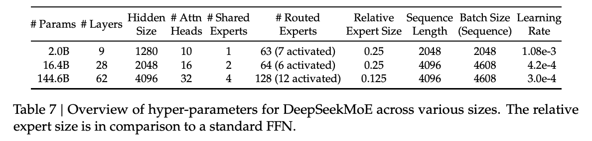
DeepSeekMoE、GShard×1.2 和 GShard×1.5 的比较见表 8。DeepSeekMoE、Dense×4 和 Dense×16 的比较见表 9。
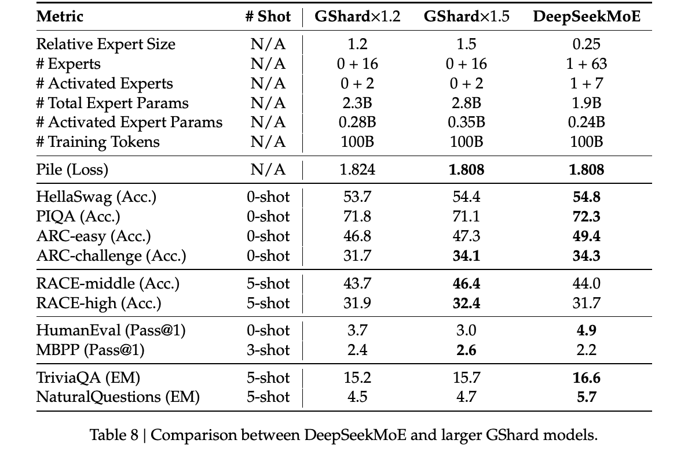
在总参数量为 13B 的更大规模下，我们也将 DeepSeekMoE 与 GShard×1.2 和 GShard×1.5 比较，结果见表 10。在更大规模下，DeepSeekMoE 甚至明显优于 GShard×1.5。
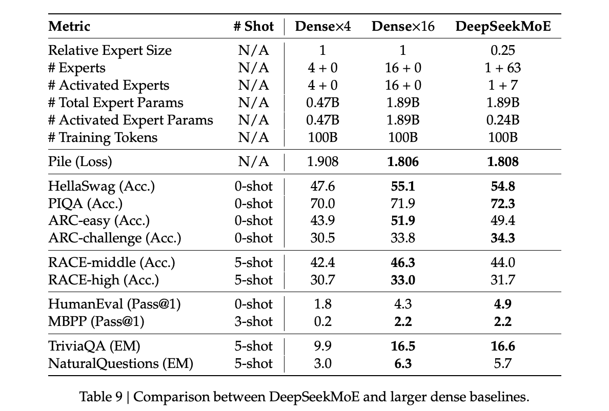
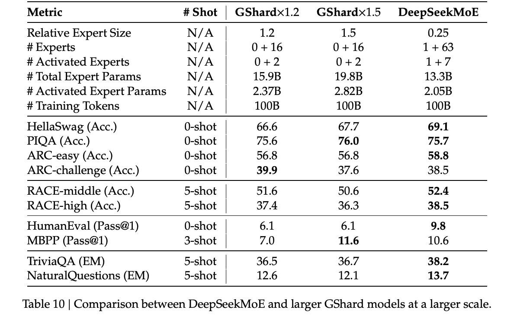
图 7 展示了 DeepSeekMoE 16B 和 DeepSeek 7B（Dense）训练期间的基准曲线，供参考。
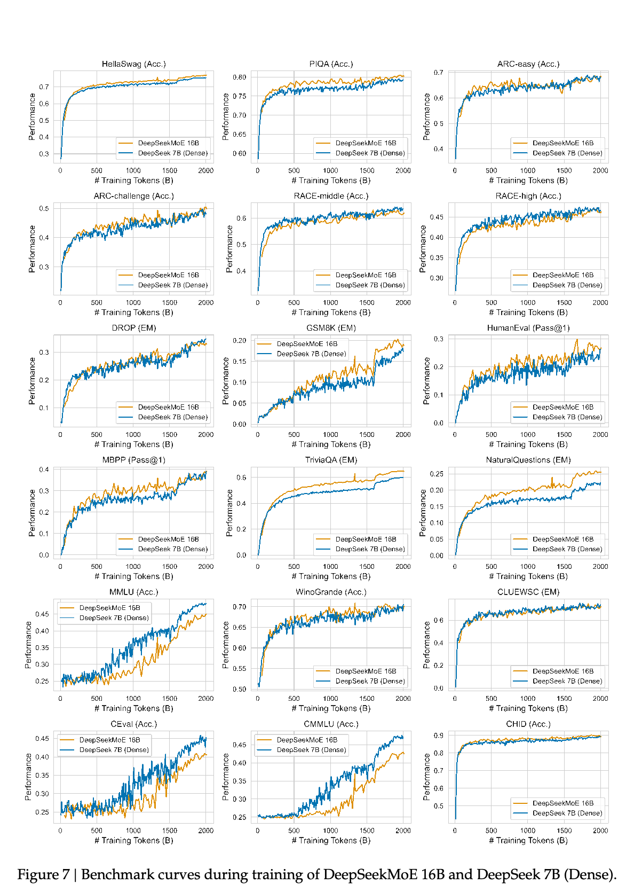